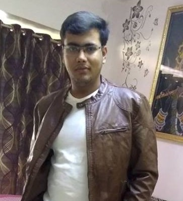

And an even wittier subheading to boot. Jumpstart your marketing efforts with this example based on Apple's marketing pages.
Create An AccountOWN Bank Ltd. is a Universal Bank with its operations driven by a cutting edge core Banking IT platform. The Bank offers personalized banking and financial solutions to its clients in the retail and corporate banking arena through its large network of Branches and ATMs, spread across length and breadth of India. We have also set up an overseas branch at Dubai and have plans to open representative offices in various other parts of the Globe, for encashing emerging global opportunities. Our experience of financial markets will help us to effectively cope with challenges and capitalize on the emerging opportunities by participating effectively in our country’s growth process.
OWN Bank is the youngest, new generation, public sector universal bank that rides on a cutting edge core banking Information Technology platform. This enables the Bank to offer personalized banking and financial solutions to its clients. The Bank had an aggregate Balance sheet size of Rs.3,74,372 crore and total business of Rs.4,81,613 crore as on March 31, 2016.
Our vision for the Bank is “TO BE THE MOST PREFERRED AND TRUSTED BANK ENHANCING VALUE FOR ALL STAKEHOLDERS”.
|
|
Rangesh KumarCEO,OWN Bank. The CEO of a bank is responsible for operations and policy. These operations include how the bank handles business. These functions are defined and regulated by the Federal Reserve, but things not regulated are determined by bank policy written by the decision makers in the bank management team, which is supervised and directed by the CEO. These policies and procedures govern operations such as lending requirements, mortgage requirements, opening an account, savings account rules, checking account rules, interest paid to customers and profit margins on money under the bank's control. The CEO is answerable to the customers, shareholder and the Federal Reserve Bank for violations of these policies. It is not necessary for the CEO to micromanage the bank operation. The CEO has several additional levels of management. While the CEO is ultimately responsible for the overall success of the operations and policy of the bank, these additional managers will handle a specific aspect of the operations and report directly to the CEO. |
Kanishk KejriwalBusiness Analyst,OWN Bank. Business Analyst provide strategy analysis in terms of identifying business need, defining the business problem, analyzing business change or identifying new opportunities they may have in future to enhance their business. This also include to understand and implement new regulatory requirements effective to avoid regulatory issues/penalties.So, business analyst analyzing the banking business is not restricted to analyzing financial data or project financial plan, but providing them software solution to enhance the overall productivity, profitability and brand value of the bank to help them to stay ahead in the competition. The business analyst at strategy side must have domain knowledge to understand the intricacies of the business(products/services), business operations (how they are delivered) and organization culture /policies so they can collaborate with stakeholders |
|
|

|
Anjani Kumar MawandiaVice President,OWN Bank. Vice presidents help to manage clients on a daily basis. They also manage the associates and (by default) the analysts and make sure the necessary financial models and Powerpoint presentations are being built. “VPs lead the layout of the presentations,” agrees Hatz. “They’re responsible for making sure the pitch documents are put together and they will also have an active daily role in executing any deals that go ahead.”“The VPs guide the analysts and associates,” says the analyst in M and A. “They’re running the deal process on a daily basis. – They’re the ones saying which materials need to be created. However, they’re also the ones who speak on the calls to the clients. They help keep the clients up to date with how things are progressing.” |
Money is electronic. Make sure you can take advantage of that fact. At a bare minimum, your bank should offer free online bill pay. You need the ability to schedule payments from anywhere, anytime (whether your bank prints and mails a check or sends the funds by ACH). Another key feature is the ability to transfer funds to another bank account. You might keep accounts at several different banks, each serving a different purpose: one bank might pay a high APY on savings and another might offer a convenient ATM network. Physically moving cash around – or even working with checks – is cumbersome, and wire transfers are too expensive for everyday use. Pick a bank that allows bank-to-bank transfers so that you can move money with just a few clicks. Want to send money to friends and family (to pay for your share of dinner, for example)? Some banks provide person-to-person (P2P) payment services as well. For the most part, these services are bank-specific, and they’re most useful when everybody involved uses the same bank. If everybody has a different bank, which is most often the case, there are usually better options.
Money isn’t always electronic. Whether you’re headed to a restaurant that doesn’t accept plastic or you’re buying used parts on Craigslist, sometimes old-fashioned cash is the only way to go. Getting cash is as easy as visiting an ATM, and there is no shortage of those, but you’ll pay several fees if you use any ATM except your bank’s ATM. After your bank and the ATM operator ding you, those fees end up being relatively high in percentage terms. If you go to the ATM more than a few times per year, find a way to minimize those fees. You can always use ATMs that are part of your bank’s network for free (or, if you use a credit union, there’s a good chance you can visit a different credit union’s ATM at no charge). If using in-network ATMs is not an option, use a bank that reimburses your ATM fees. Numerous banks (online and brick-and-mortar) offer this feature. Be sure to read the fine print to find out about any limitations – there might be a maximum dollar limit each month, and certain types of ATM fees might not be covered.
Every bank has a website that allows you to view your account balances and move money between accounts. Most banks also offer apps and mobile websites optimized for your phone or tablet (and those apps all do more or less the same thing). So what should you look for in your next bank’s app? In the age of online banking, there are very few situations in which you need to physically go to a branch (which means dealing with traffic, lines, and banking hours). Depositing a check is one of those situations – you want to get the check in your account safely and quickly. Fortunately, you can also deposit checks by sending a picture to your bank – no teller required. The service is generally free, and you might even be able to get deposits into your account after standard branch hours. Almost any mobile device with a camera will do the trick, but it’s a good idea to make sure your bank has an app for your device. You might not get many checks, but when you do it’s nice not to have to visit a bank branch. Checks are still used for important (often large-dollar) transactions when your life is in transition: a new job, a new apartment, and so on. Mobile check deposit makes those transitions a lot easier. As a runner-up – especially if you occasionally need to deposit cash – you might opt for a bank with numerous local ATMs that accept deposits.
One of the most important features of your next bank account should be an affordable fee structure – preferably without any fees at all. Bank charges easily blow through any interest you earn in your account, and automatic monthly maintenance fees put you in catch-up mode before you’ve even had a chance to use your account. Free checking is not dead. Finding a fee-free account is especially easy if you’re open to online banking, but you should be able to find free checking at brick-and-mortar institutions in most areas as well. Credit unions, in particular, are often a good choice for free checking, and small local banks are also worth checking out. If you can’t find a completely free account, qualifying for free service is the next best thing. Most banks and credit unions that charge maintenance fees also offer ways to dodge those fees: if you meet certain criteria, the fee will be waived. For example, if you set up direct deposit with your employer or keep a certain amount in your account, you’ll avoid monthly maintenance fees.
OWN BANK,
STAR HOUSE,
C - 5, "G" Block,
Bandra Kurla Complex,
Bandra (East),
Mumbai 400 051.
Ph: 022-66684444
Call at Tele No - (022) – 40919191 / 1800 220 229
Email: care@ownbank.com